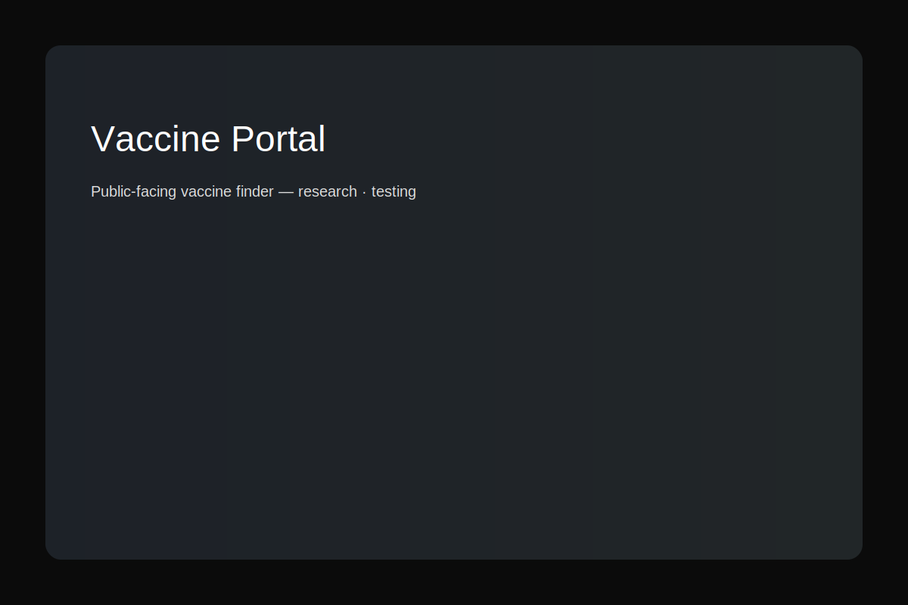

← Back to Home

Vaccine Portal — Serving People During a Time of Need
Client: State health agency
Role: Led research, design, and user testing for a public-facing vaccine finder tool.
Goal
Help residents find convenient COVID-19 vaccination sites.
Approach & Highlights
- Mapped user mindsets and prioritized homepage content via card sorting
- Designed and tested a vaccine finder (without a map)
- Iterated design through 3 rounds of testing
- Added logos, real-time availability indicators, and a “Call to Schedule” feature
Impact
100,000+ users visited the portal; 74.5% used the availability filter; 44% used the proximity filter.